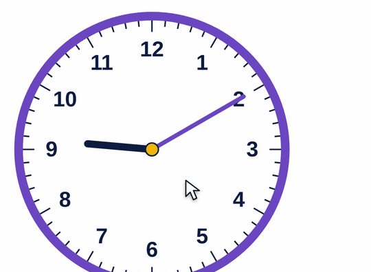

What it is
Short hand: the hour. Long hand: the minutes. Read the hour first.
The numbers on the clock are hours. The minutes are hidden: count by 5s around the edge. The small purple numbers here show them.
How to use the tool
- Drag the long hand to move the minutes. The short hand follows.
- Read the hour first, then the minutes.
- For time passed, set the start time, then drag the long hand forward.
- Count the hours, then the minutes.

Try this with your class
A movie starts at 2:45 and ends at 4:20. How long is it?
- 2:45 to 3:00 is 15 minutes.
- 3:00 to 4:00 is 1 hour.
- 4:00 to 4:20 is 20 minutes. Total: 1 hour 35 minutes.
Draw the same jumps on a number line. Hopping to the next hour first works every time.
Watch for
Reading the next hour.At 2:45 the short hand is near 3. Ask: has it reached 3 yet?
Reading the 9 as 9 minutes.Count by 5s from 12 to the long hand.
Subtracting times like regular numbers.4:20 − 2:45 is not 1:75. An hour has 60 minutes, not 100. Count up instead.
Try it yourself
Based on: Math Learning Center, Math Clock · Edutopia, number lines for elapsed time